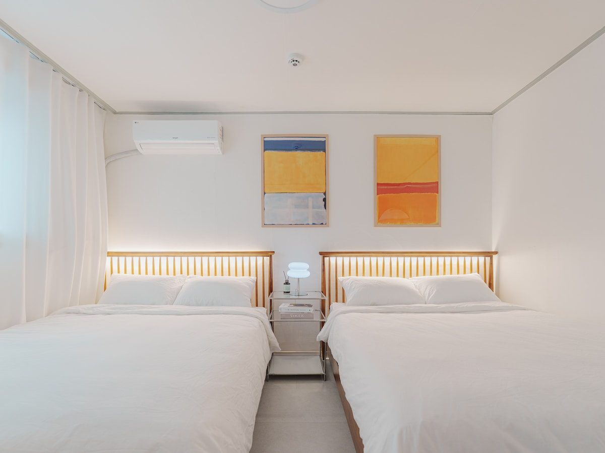
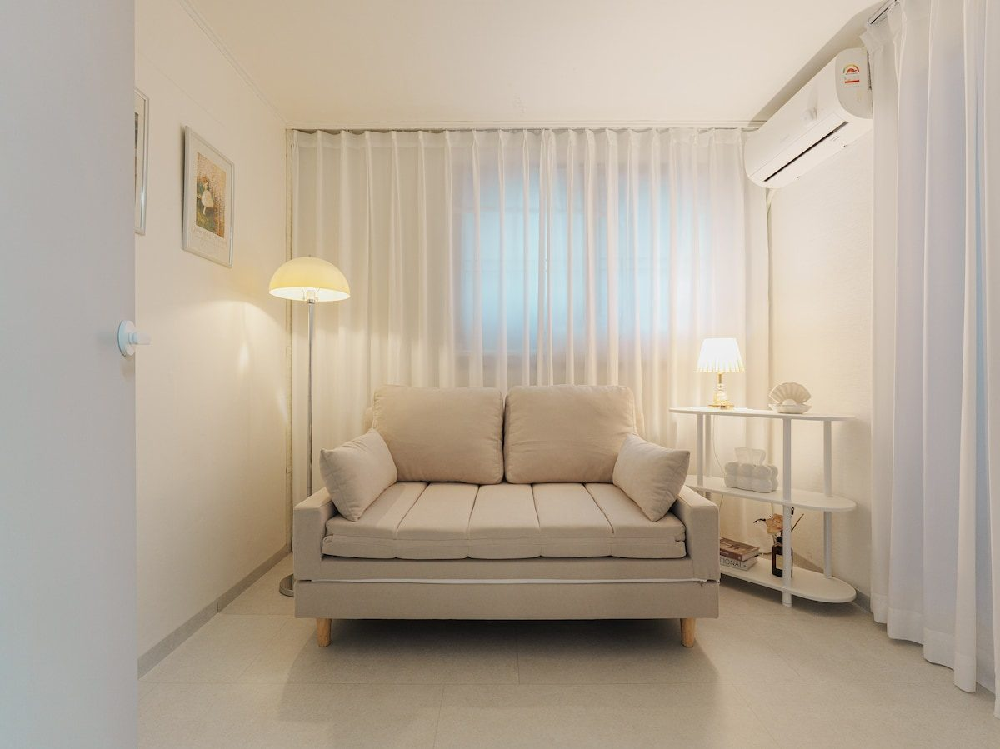
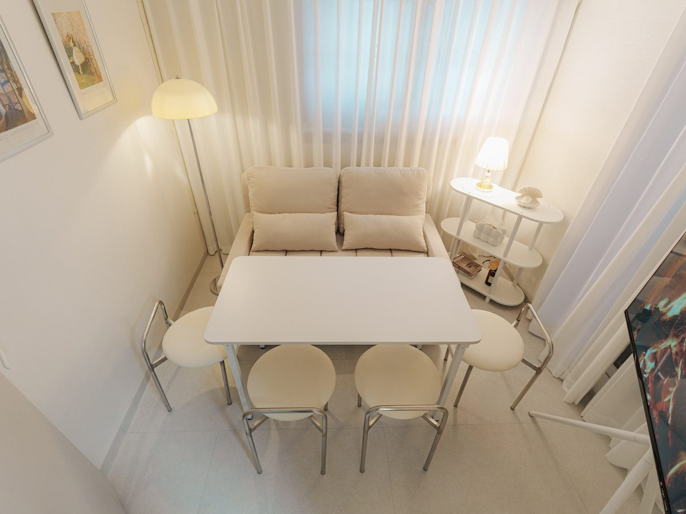
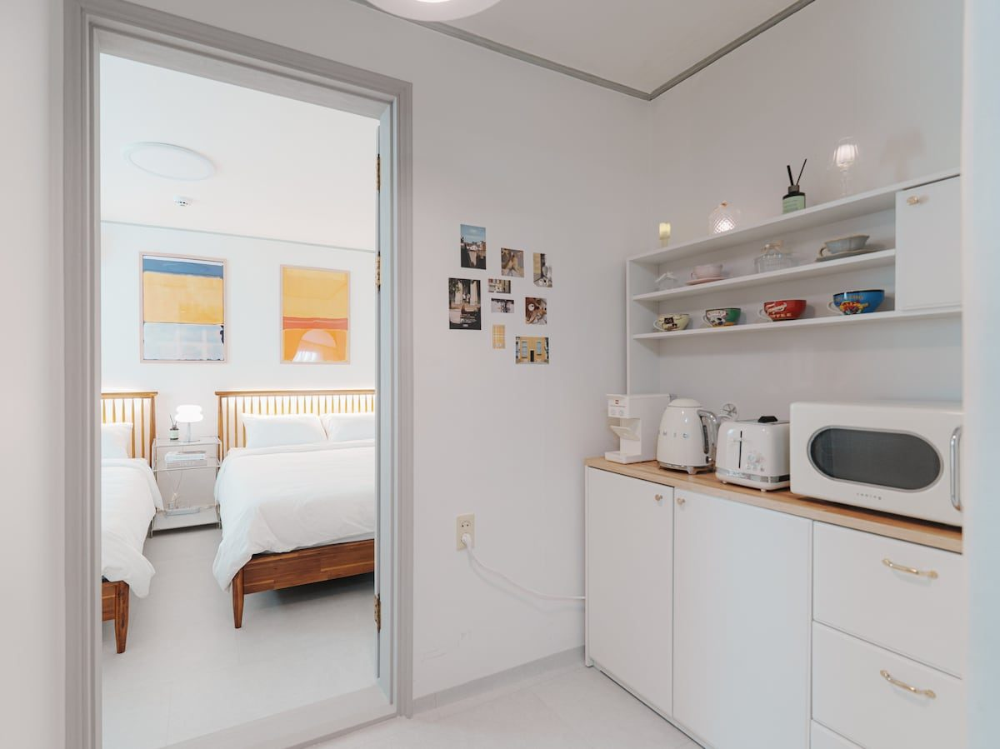
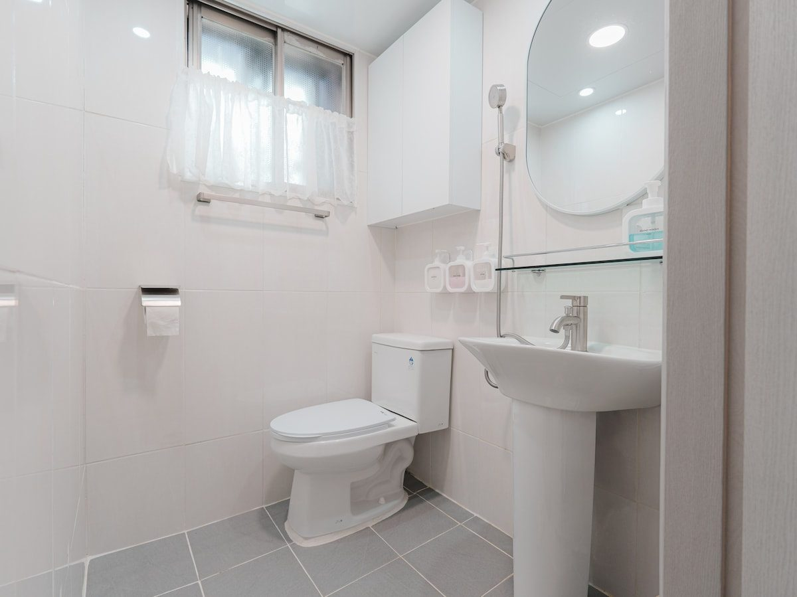
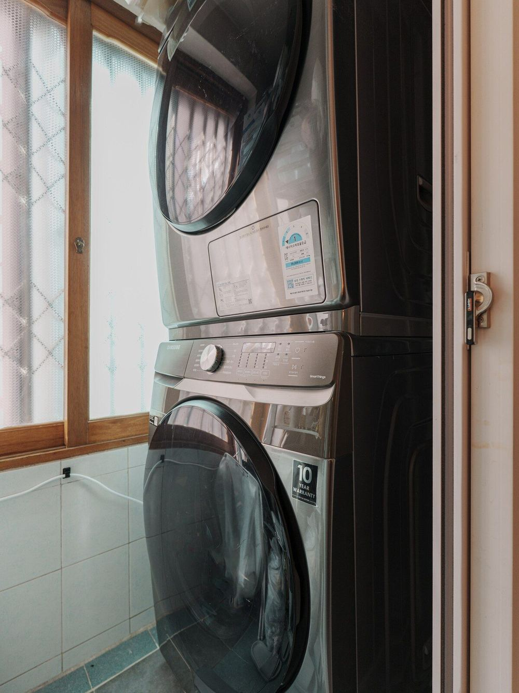
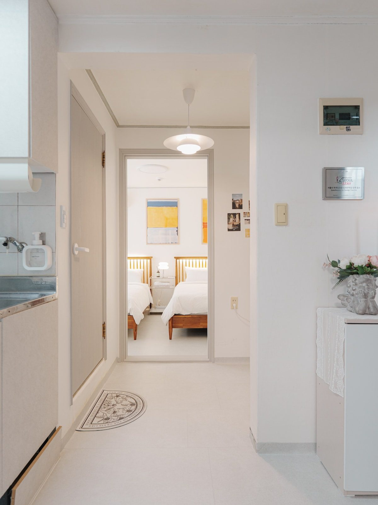
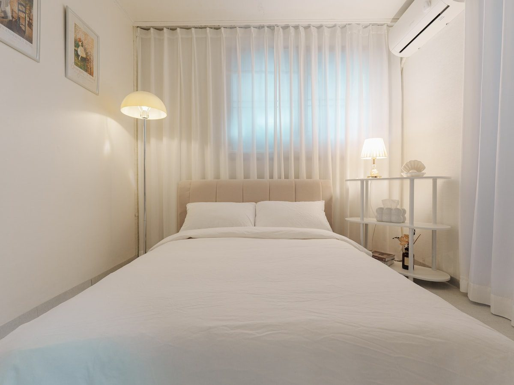

이용안내
바라스 잠실 이용안내
잠실역과 롯데월드, 코엑스까지 편리한 2베드룸 아파트, 바라스 잠실입니다. 체크인부터 체크아웃까지 필요한 안내를 한곳에 정리했습니다.

지금 어떤 상황이세요?
🏠 숙소 공간
사진은 지금 머무시는 그대로입니다. 방 배치와 가구는 사진과 같고, 소파베드는 5인 이상 예약 시 침대로 준비합니다.





🕓 체크인 · 체크아웃
- 체크인 오후 4시(16:00) 이후입니다. 셀프 체크인이며, 도어락 비밀번호는 체크인 당일 1시간 전에 메시지로 보내드립니다.
- 체크아웃 오전 11시(11:00)까지입니다. 퇴실하실 때 메시지를 남겨 주시면 15분 뒤 스태프가 방문합니다.
- 얼리 체크인 · 레이트 체크아웃 · 숙소 내 짐 보관 단독 세대에 청소·정비 일정(11:00~15:00)이 있어 어렵습니다.
짐 보관이 필요하시면
- 삼전역 역사 안 물품보관함 — 05:00~24:00, 2~4시간 기본요금 1,000~6,100원(크기와 주말 여부에 따라 다름)
- TripEasy 인천공항 짐 배송 서비스 — 짐을 공항으로 보내거나 받을 수 있습니다.
체크아웃 시 확인해 주세요
- 전체 소등
- 에어컨 전원 끄기
- 보일러는 실온 유지로 두기
- 쓰레기는 주방 지정 공간에 정리
- 퇴실 메시지 남기기
📍 오시는 길
- 주소 서울특별시 송파구 삼전로7길 17 (잠실동) 101호 · 우편번호 05568
- 층 건물 1층입니다. 공동현관에서 계단 6~7칸을 올라오시면 101호가 나옵니다.
- 주차 건물 안에는 주차할 수 없습니다. 도보 7분 거리 새마을시장 노상 공영주차장(서울 송파구 잠실동 279)을 이용해 주세요. 1시간 3,000원이며 ‘모두의 주차장’ 앱에서 확인할 수 있습니다.
인천국제공항에서
- 인천공항철도 (약 1시간 50분) 인천공항1터미널역 → 김포공항역 하차 → 9호선 환승(공항시장역 방면) → 고속터미널역에서 내려 다시 9호선 승차 → 삼전역 하차 → 도보 2분
- 공항 리무진 6006 (약 1시간 45분) 몽촌토성역 방면 → 잠실새내역 하차 → 도보 14분

🔑 출입 방법
- 들어오시는 길 공동현관을 지나 계단 6~7칸을 올라오시면 101호입니다.
- 도어락 키패드에 비밀번호를 입력하면 열립니다.
- 슬리퍼 실내 거실화는 따로 없습니다. 실외용 슬리퍼를 준비해 두었으니 사용해 주세요.


📶 와이파이
KT_GiGA_11C3
2db03ch986
📌 규칙 및 주의사항
- 절대 금연 실내 전 구역이 금연입니다. 화재 감지기가 작동합니다.
- 조용한 시간 밤 10시 이후에는 이웃을 위해 소음을 자제해 주세요.
- 변기 물티슈·음식물 등 이물질을 변기에 버리지 마세요. 막힘이나 파손이 생기면 원상 복구 비용을 에어비앤비 해결 센터를 통해 정산합니다.
- 실내화 실내 거실화는 따로 없습니다. 실외용 슬리퍼를 사용해 주세요.
- 추가 침구 5인 이상일 때 기본 제공되며, 그 외 추가는 별도 비용이 있습니다.
- 분실물 퇴실 후 남겨진 물건은 연락이 닿지 않으면 바로 폐기됩니다. 떠나시기 전에 한 번 더 확인해 주세요.
🛠️ 시설·가전 사용법
온수·세탁기·소파베드·에어컨 순서로 펼쳐 보실 수 있습니다.
온수
- 온수를 쓰실 때는 보일러를 켜 주세요. 퇴실 시에는 보일러를 실온 유지로 두고 가 주세요.
세탁기 · 건조기
- 발코니에 있습니다. 건조기 안에 남아 있는 침구는 세탁바구니에 꺼내 두고 사용해 주세요.
- 세탁이 끝나면 세탁기 문을 열어 두면 냄새와 곰팡이를 막을 수 있습니다.
소파베드
- 5인 이상 예약에서 소파베드를 침대로 사용하시며, 침구는 기본 제공됩니다. 5인 미만 예약에서 추가 침구가 필요하시면 별도 비용이 있습니다.
- 베란다 이불보관함에 매트리스 커버·이불·베개가 있습니다. 반드시 매트리스 커버를 깔고 사용해 주세요.
- 소파베드 방에는 접이식 테이블과 스툴이 준비되어 있습니다.

에어컨
- 소파베드 방 바깥 창문은 에어컨 실외기 환기를 위해 열어 두세요. 에어컨을 쓰지 않는 계절에는 닫아 주세요.
🗑️ 쓰레기 분리수거
한국은 분리배출 규정이 엄격하고, 잘못 배출하면 과태료가 부과될 수 있습니다. 번거롭더라도 꼭 나눠 주세요.
- 봉투 위치 싱크대 하부장 또는 냉장고 오른쪽 서랍장에 있습니다.
- 일반쓰레기 지정 봉투에 담아 주세요.
- 재활용 분리한 뒤 비닐봉지째 묶어 주세요.
- 음식물 음식물 전용 봉투에 담아 주세요.
- 모아 둘 곳 체크아웃 시에는 숙소 안 주방 지정 공간에 모아 주시면 스태프가 정리합니다. 숙박 중 쓰레기통을 비우고 싶으신 경우에는 숙소 공동현관을 나와 왼편 지정 장소를 이용하시면 됩니다.
🍴 맛집 & 체험
바로 인근 지인 숙소(Moment Seoul)의 안내를 그대로 옮겨 왔습니다. 걸어서 가는 삼전동 골목부터 송리단길·석촌호수·롯데월드몰까지, 도착한 날 바로 쓸 수 있는 목록입니다.
이동 시간과 영업시간은 인근 숙소 기준으로 정리된 안내입니다. 문을 닫았거나 시간이 바뀌었을 수 있으니, 출발 전에 지도 앱으로 한 번 확인해 주세요.
💬 자주 묻는 질문
지난 게스트분들이 실제로 가장 많이 물어보신 내용입니다. 질문을 누르면 답이 펼쳐집니다.
숙소가 신축인가요? 몇 층이고 엘리베이터가 있나요?
구옥을 새로 정돈한 집입니다. 건물 1층이고, 공동현관에서 계단 6~7칸을 올라오시면 101호가 나옵니다. 엘리베이터는 없습니다.
정확한 주소를 미리 알 수 있나요?
정확한 주소와 오시는 길은 체크인 당일 오전 10시에 메시지로 한 번 더 보내드립니다. 이 페이지의 ‘오시는 길’에서도 바로 확인하실 수 있습니다.
주차는 어떻게 하나요?
건물 안에는 주차할 수 없습니다. 도보 7분 거리 새마을시장 노상 공영주차장(서울 송파구 잠실동 279)을 이용해 주세요. 1시간 3,000원이며 ‘모두의 주차장’ 앱에서 확인할 수 있습니다.
얼리 체크인이나 레이트 체크아웃이 가능한가요?
죄송합니다. 단독 세대로 당일 청소·정비 일정(11:00~15:00)이 있어 얼리 체크인과 레이트 체크아웃은 어렵습니다. 숙소 안 짐 보관도 같은 이유로 어렵습니다.
짐을 맡길 곳이 있을까요?
삼전역 역사 안 물품보관함을 이용해 주세요(05:00~24:00, 2~4시간 기본요금 1,000~6,100원). 인천공항으로 짐을 보내는 TripEasy 배송 서비스도 있습니다.
최대 몇 명까지 묵을 수 있나요?
최대 6인입니다. 5인 이상 예약이면 소파베드를 침대로 준비해 드리고 침구도 기본 제공됩니다. 5인 미만에서 추가 침구가 필요하시면 별도 비용이 있습니다.
소파베드는 어떻게 쓰나요?
베란다 이불보관함에 매트리스 커버·이불·베개가 있습니다. 소파베드에는 반드시 매트리스 커버를 깔고 사용해 주세요.
온수가 안 나올 때는요?
온수를 쓰실 때는 보일러를 켜 주세요. 퇴실하실 때는 보일러를 실온 유지로 두고 가 주시면 됩니다.
세탁기와 건조기를 써도 되나요?
네, 베란다에 있습니다. 이웃이 함께 사는 건물이라 밤 9시부터 아침 7시까지는 사용을 자제해 주세요. 건조기 안에 남아 있는 침구는 세탁바구니에 옮겨 두고 쓰시면 됩니다.
흡연할 수 있는 곳이 있나요?
없습니다. 실내 전 구역이 금연이고 화재 감지기가 작동합니다. 흡연이 확인되면 숙소 이용규칙 위반으로 예약이 취소(즉시 퇴실)될 수 있습니다.
변기에 물티슈를 버려도 되나요?
안 됩니다. 물티슈와 음식물 등 이물질은 변기에 버리지 마세요. 막힘이나 파손이 생기면 원상 복구 비용을 에어비앤비 해결 센터를 통해 정산합니다.
입국 신고서(K-ETA)에 쓸 정보가 필요해요
주소는 서울시 송파구 삼전로7길 17, 101호(우편번호 05568)이고 연락처는 010-9397-1289입니다. ‘오시는 길’에도 같은 내용이 있습니다.
주변에 걸어갈 만한 식당이 있나요?
네. 위의 ‘맛집 & 체험’에 걸어서 가는 삼겹살집·국밥·칼국수부터 송리단길 카페와 롯데월드몰 맛집까지 정리해 두었습니다.
분실물은 어떻게 되나요?
퇴실 후 남겨진 물건은 연락이 닿지 않으면 바로 폐기됩니다. 떠나시기 전에 한 번 더 확인해 주세요.
☎️ 비상 연락처
- 숙박 중 문의·문제 예약하신 앱의 메시지로 연락 주세요. 가장 빠르게 도와드릴 수 있습니다.
- 운영자 긴급 연락 010-9397-1289 · 통화가 어려우면 문자를 남겨 주세요.
- 긴급 전화 화재·구급 119 · 경찰 112 · 응급의료 상담 1339
- 통역 안내 관광 통역 안내 1330 (영어·일본어·중국어)